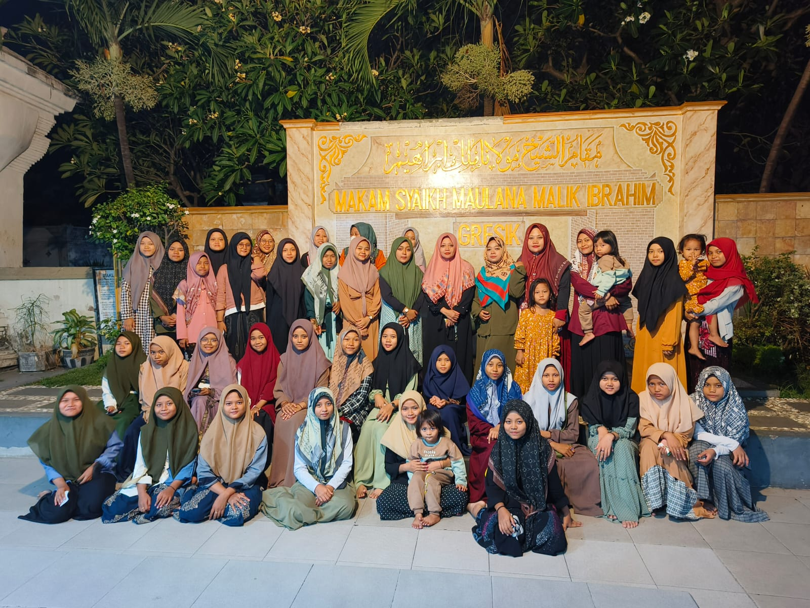

Carousel
"Carousel" adalah sebuah tehnik membuat file gambar yang otomatis slide seperti pada website yang sering kita lihat, seperti contoh di bawah ini.


"Carousel" adalah sebuah tehnik membuat file gambar yang otomatis slide seperti pada website yang sering kita lihat, seperti contoh di bawah ini.
